> EC50[,1:13] <- scale(EC50[,1:13])线性回归模型
✏️本节导读
本节首先对自变量进行标准化，由于因变量不满足正态分布，于是将其取对数变为log10ec50；
之后观察各自变量与因变量之间是否存在线性关系，构建十三个自变量与自变量之间的多元回归模型；
对回归模型进行诊断，发现存在多重共线性，拟合程度低等问题；进一步分析发现根本原因是不同种类的数据之间差异太大； 于是分种类构建多元线性回归模型，并通过最优子集法筛选简化变量，拟合度较高。
数据导入
对自变量进行标准化：
Q6:为什么不对因变量进行标准化
自变量标准化主要是为了消除不同自变量之间由于量纲、数量级等差异所带来的影响。注意：标准化只是改变了横纵坐标的取值大小，但并不改变变量的分布趋势。
因变量可以标准化，也可以不进行标准化。
如果我们的主要目的是预测因变量的实际值，那么一般不对因变量进行标准化。
如果我们关注模型参数的某些性质（如系数大小的直接比较等），筛选观察不同变量之间的重要性程度等，一般对因变量进行标准化。
展示处理后数据的前6行
> head(EC50) AKT1 PKC PIK3CA PDE5 AMPK eNOS
1 -0.7152059 0.23097874 -0.7268737 0.04982355 0.20954781 0.2943302
2 -1.6765444 -0.02762759 -0.7328289 -0.51239489 -0.47411811 -0.7139716
3 -0.2400386 0.76304378 0.5526296 0.72232070 2.01150159 0.6636944
4 -1.6915497 -0.16479378 -1.2653881 -1.34591248 -0.26202904 -0.9807731
5 -1.5274919 -0.09490018 -0.5167425 -0.10104854 -0.22507412 -0.5968561
6 -1.3014123 0.09293888 -0.5439660 -0.90682732 0.03441365 -0.1838335
SIRT1 PDK1 PRKG1 APLNR TGR5 EDNRB
1 0.3619633 -0.2178962 -0.22979037 0.5236092 0.42771601 0.08453003
2 -0.7595274 -0.8141069 -0.62275985 -0.8581196 -0.43231481 -1.05226713
3 1.8156919 1.2150377 1.17524017 1.4959677 1.31641452 0.82725913
4 -0.7565207 -0.9155279 -0.34724214 -0.9727101 -0.55098573 -1.27200466
5 -0.7437423 -0.6460378 -0.64032273 -0.8929950 -0.16963873 -0.86090897
6 -0.5588317 -0.5793897 0.06658326 -0.6206350 0.06170289 -0.74252639
CYP1A1 ec50 log10ec50
1 -0.8397743 53.703 1.729999
2 -0.8713804 80.630 1.906497
3 2.9208875 17.380 1.240050
4 -0.9438886 312.250 2.494502
5 -0.8871835 34.780 1.541330
6 -0.5106990 254.590 2.405841
数据介绍
数据有十三个连续型变量作为自变量，这些变量是十三个舒张血管通路上的靶点蛋白。每一条数据是不同的蛋白化合物与这些靶点蛋白的结合能数据值。
数据有一个连续型因变量是ec50值，由于ec50值的跨度比较大，不满足正态分布的优良性质，因此我们取log10(ec50)做为之后连续型分析的指标。ec50值是判断蛋白化合物舒张血管作用大小的权威指标。一般认为ec50<300的蛋白化合物具有舒张血管作用，ec50值越小，该蛋白化合物的舒张血管作用越明显。
该数据有196条数据，主要是由6种蛋白化合物构成，例如：黄酮类、皂苷类、生物碱类、酚类、萜类、苯丙素类。
本研究的主要目的是构建模型，使用蛋白化合物与十三个靶点蛋白的结合能预测log10ec50值，进而判断该蛋白化合物舒张血管的作用的强弱，进而自动帮助我们筛选具有舒张血管作用的蛋白化合物，一定程度上减少一个一个做实验验证带来的人力、物力、财力和时间的花费。
观测各变量趋势
以ec50为因变量
以ec50为因变量作图，我们发现，由于ec50值跨度太大，无法体现其与各个自变量之间是否具有线性趋势。因此我们尝试log10ec50作为我们的因变量。
> A <- names(EC50)[1:2]
> for(i in A){
+ a <- ggplot(data= EC50,mapping= aes_string(x=i,y="ec50",group=1))+
+ geom_point()+
+ geom_smooth(method = "lm")
+ print(a)
+ }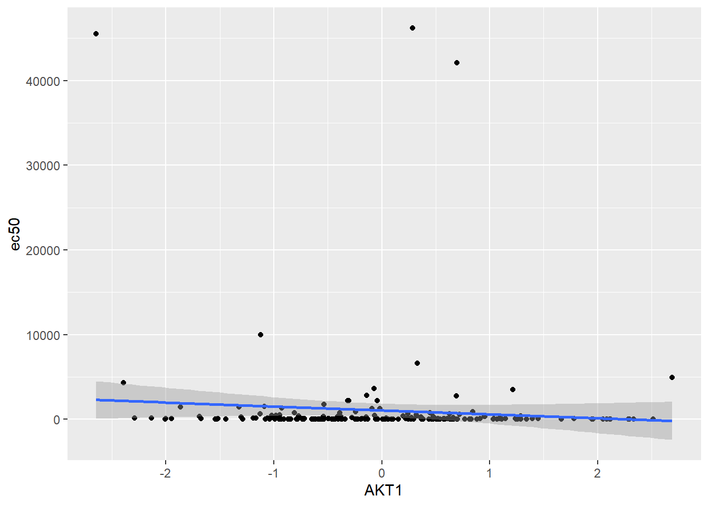

以log10ec50为因变量
> for(i in A){
+ a <- ggplot(data= EC50,mapping= aes_string(x=i,y="log10ec50",group=1))+
+ geom_point()+
+ geom_smooth(method = "lm")
+ print(a)
+ }

各种化合物类型的结合能差异
> library(readxl)
> EC50_1 <- read_excel("D:\\Rstudio\\Rmyfile\\Traditional Chinese Medicine\\EC50种类图.xlsx")
> EC50_1$ec50 <- as.numeric(EC50_1$ec50)
> EC50_1$log10ec50 <- log10(EC50_1$ec50)> library(tidyverse)
> p1 <-ggplot(data = EC50_1 ,aes(x=Species,y=log10ec50))+
+ geom_boxplot()+
+ theme_classic()
> p2 <-ggplot(data = EC50_1 ,aes(x=Species,y=AKT1))+
+ geom_boxplot()+
+ theme_classic()
> p3 <-ggplot(data = EC50_1 ,aes(x=Species,y=PKC))+
+ geom_boxplot()+
+ theme_classic()> library(gridExtra)
> library(dplyr)
> p_final <- grid.arrange(p1, arrangeGrob(p2, p3, ncol=2), nrow=2, heights=c(1, 1.5))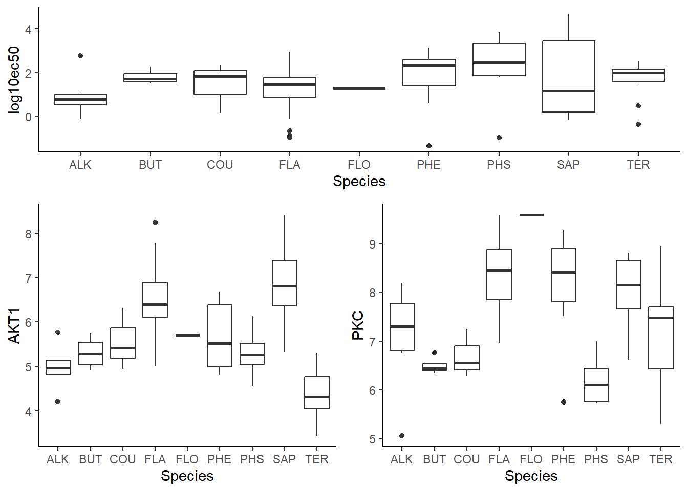
> ggsave("EC50种类分布图.png",p_final,width = 12, height = 6, dpi = 300)
Note
我们发现不同种类的log10ec50值存在差异。
不同种类蛋白化合物与靶点蛋白的结合能也存在差异。
这将导致数据整体之间的方差增大。使得线性模型集合比较困难。
对所有指标构建线性模型
仅有三个变量显著，可解释20%的方差
> y <- EC50[,15]
> x <- EC50[,-c(15,14)] > model <- lm(log10ec50~.-ec50,data = EC50)
> summary(model)
Call:
lm(formula = log10ec50 ~ . - ec50, data = EC50)
Residuals:
Min 1Q Median 3Q Max
-3.12158 -0.58477 0.02202 0.65812 2.65826
Coefficients:
Estimate Std. Error t value Pr(>|t|)
(Intercept) 1.46962 0.08402 17.492 <2e-16 ***
AKT1 0.12327 0.13630 0.904 0.367
PKC -0.18805 0.20997 -0.896 0.372
PIK3CA 0.14539 0.19609 0.741 0.459
PDE5 -0.27717 0.25187 -1.100 0.273
AMPK -0.13888 0.28428 -0.489 0.626
eNOS -0.27270 0.20394 -1.337 0.183
SIRT1 0.28187 0.25089 1.123 0.263
PDK1 0.06393 0.20653 0.310 0.757
PRKG1 -0.10408 0.16246 -0.641 0.523
APLNR -0.24339 0.25401 -0.958 0.339
TGR5 0.28460 0.21703 1.311 0.191
EDNRB -0.14917 0.23124 -0.645 0.520
CYP1A1 -0.02094 0.13216 -0.158 0.874
---
Signif. codes: 0 '***' 0.001 '**' 0.01 '*' 0.05 '.' 0.1 ' ' 1
Residual standard error: 1.176 on 182 degrees of freedom
Multiple R-squared: 0.1843, Adjusted R-squared: 0.126
F-statistic: 3.162 on 13 and 182 DF, p-value: 0.000272> # 预测
> predictions <- predict(model, newdata = EC50)
>
> # 计算MSE
> mse_lm <- mean((predictions - y)^2)
> print(paste("Linear Regression MSE:", mse_lm)) [1] "Linear Regression MSE: 1.2846903485486"线性模型诊断
对已经构建的模型进行诊断：
满足正态性，方差齐性，数据表现良好，但多个变量之间的共线性较高。
> library(YangPac)
> ModelDiagnose(model) [1] "------------------正态性检验--------------------"
Warning: Non-normality of residuals detected (p = 0.013).
[1] "-----------异方差性（方差齐性）检验---------------"
OK: Error variance appears to be homoscedastic (p = 0.139).
[1] "----------------自相关性检验--------------------"
OK: Residuals appear to be independent and not autocorrelated (p = 0.510).
[1] "-----------多重共线性性检验---------------"
# Check for Multicollinearity
Low Correlation
Term VIF VIF 95% CI Increased SE Tolerance Tolerance 95% CI
AKT1 2.62 [2.16, 3.26] 1.62 0.38 [0.31, 0.46]
PRKG1 3.72 [3.01, 4.69] 1.93 0.27 [0.21, 0.33]
CYP1A1 2.46 [2.04, 3.06] 1.57 0.41 [0.33, 0.49]
Moderate Correlation
Term VIF VIF 95% CI Increased SE Tolerance Tolerance 95% CI
PKC 6.21 [4.94, 7.91] 2.49 0.16 [0.13, 0.20]
PIK3CA 5.42 [4.32, 6.88] 2.33 0.18 [0.15, 0.23]
PDE5 8.94 [7.05, 11.43] 2.99 0.11 [0.09, 0.14]
eNOS 5.86 [4.66, 7.45] 2.42 0.17 [0.13, 0.21]
SIRT1 8.87 [6.99, 11.34] 2.98 0.11 [0.09, 0.14]
PDK1 6.01 [4.78, 7.65] 2.45 0.17 [0.13, 0.21]
APLNR 9.09 [7.16, 11.63] 3.02 0.11 [0.09, 0.14]
TGR5 6.64 [5.26, 8.46] 2.58 0.15 [0.12, 0.19]
EDNRB 7.54 [5.96, 9.62] 2.75 0.13 [0.10, 0.17]
High Correlation
Term VIF VIF 95% CI Increased SE Tolerance Tolerance 95% CI
AMPK 11.39 [8.94, 14.60] 3.37 0.09 [0.07, 0.11]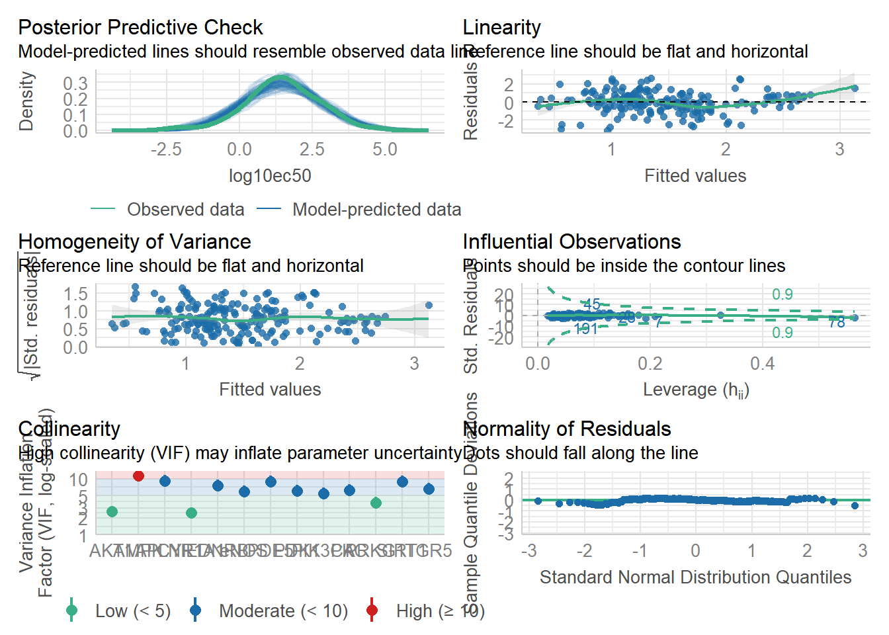
相关性图
发现除了CYP1A1之外，其他变量之间都存在较强的正相关关系。
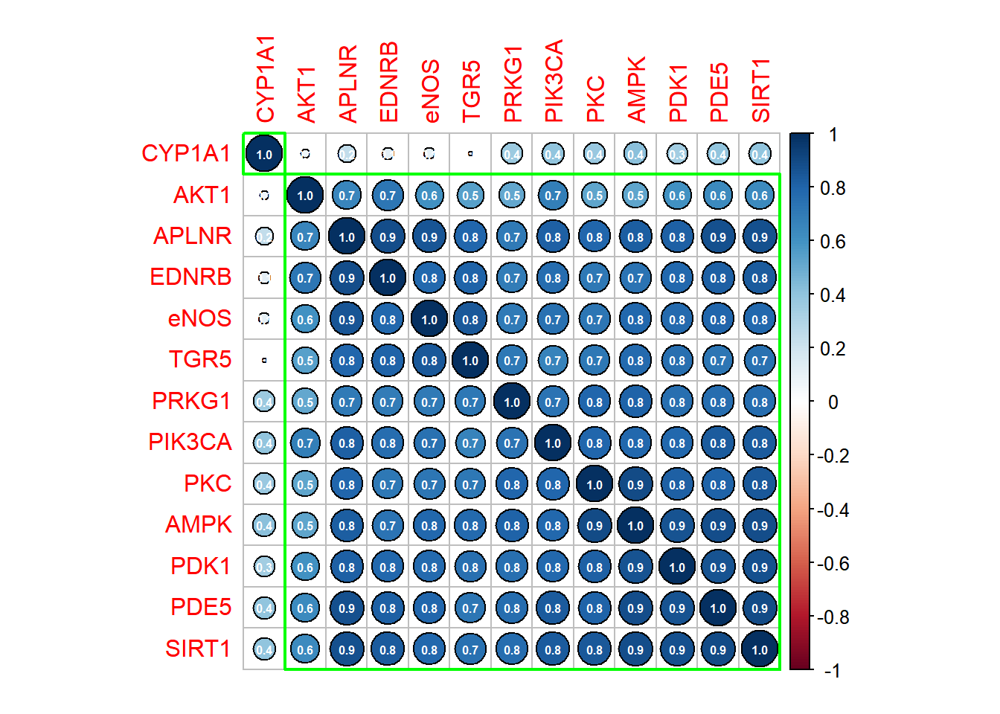
最优子集法筛选模型
保留了几个变量，线性关系较为显著（P<0.0001)，但解释程度仍然不高(Adjusted R-squared:0.1386)。
Call:
lm(formula = log10ec50 ~ PDE5, data = EC50)
Residuals:
Min 1Q Median 3Q Max
-3.6312 -0.5899 0.0133 0.7747 2.9220
Coefficients:
Estimate Std. Error t value Pr(>|t|)
(Intercept) 1.46962 0.08341 17.619 < 2e-16 ***
PDE5 -0.47572 0.08362 -5.689 4.66e-08 ***
---
Signif. codes: 0 '***' 0.001 '**' 0.01 '*' 0.05 '.' 0.1 ' ' 1
Residual standard error: 1.168 on 194 degrees of freedom
Multiple R-squared: 0.143, Adjusted R-squared: 0.1386
F-statistic: 32.36 on 1 and 194 DF, p-value: 4.657e-08岭回归
解释：自变量之间存在多重共线性，普通最小二乘法将不适用。
方法1：剔除多重共线性较高的变量；
方法2：岭回归，是一种有偏的估计，以损失部分信息，降低精度为代价获得回归系数，对于存在离群点的数据拟合要强于最二乘法。它的有偏性可以缓解多重共线性问题以及过度拟合问题。但也因其有偏，𝜆值越大，偏离程度也会越大，拟合的效果也会越来越小。
𝜆为岭系数，𝜷为岭回归的回归系数

> y <- EC50[,15] |>as.matrix()
> x <- EC50[,-c(15,14)] |>as.matrix()计算岭系数
方法1 交叉验证
> cvfit <- cv.glmnet(x,y,type="mse",nfolds = 5,alpha=0.01, missing_value = T)#交叉验证函数
> #a=0,岭回归，a=0-1之间，弹性网络，a=1,lasso回归
> plot(cvfit)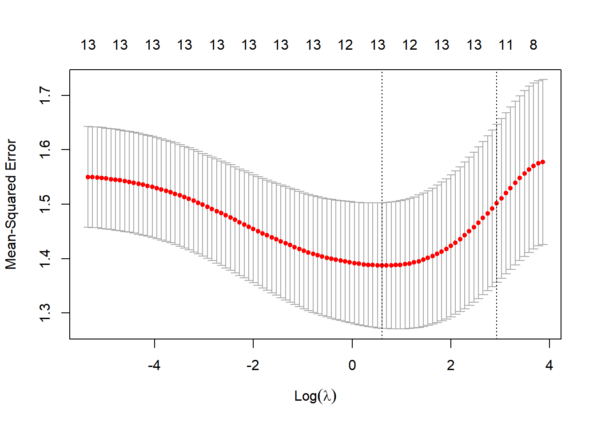
> cvfit$lambda.min#均方误差最小的𝜆值 [1] 1.828531方法2 100次迭代
选取最小的lambda值，0.05。作为之后岭回归的惩罚系数。
> ridge <- glmnet(x,y,family = "gaussian",alpha = 0)#gaussian,指的是因变量是连续性变量的情况；family=binomial因变量为分类变量
> print(ridge)
Call: glmnet(x = x, y = y, family = "gaussian", alpha = 0)
Df %Dev Lambda
1 13 0.00 474.50
2 13 0.74 432.40
3 13 0.81 393.90
4 13 0.89 358.90
5 13 0.97 327.10
6 13 1.06 298.00
7 13 1.16 271.50
8 13 1.26 247.40
9 13 1.38 225.40
10 13 1.50 205.40
11 13 1.63 187.20
12 13 1.78 170.50
13 13 1.93 155.40
14 13 2.10 141.60
15 13 2.28 129.00
16 13 2.47 117.50
17 13 2.68 107.10
18 13 2.90 97.58
19 13 3.13 88.91
20 13 3.38 81.02
21 13 3.64 73.82
22 13 3.92 67.26
23 13 4.21 61.29
24 13 4.52 55.84
25 13 4.84 50.88
26 13 5.18 46.36
27 13 5.52 42.24
28 13 5.88 38.49
29 13 6.25 35.07
30 13 6.62 31.95
31 13 7.01 29.12
32 13 7.40 26.53
33 13 7.79 24.17
34 13 8.18 22.02
35 13 8.58 20.07
36 13 8.97 18.29
37 13 9.35 16.66
38 13 9.73 15.18
39 13 10.09 13.83
40 13 10.45 12.60
41 13 10.79 11.48
42 13 11.12 10.46
43 13 11.44 9.53
44 13 11.73 8.69
45 13 12.02 7.92
46 13 12.28 7.21
47 13 12.53 6.57
48 13 12.77 5.99
49 13 12.98 5.46
50 13 13.19 4.97
51 13 13.38 4.53
52 13 13.56 4.13
53 13 13.72 3.76
54 13 13.88 3.43
55 13 14.02 3.12
56 13 14.16 2.85
57 13 14.29 2.59
58 13 14.42 2.36
59 13 14.54 2.15
60 13 14.65 1.96
61 13 14.76 1.79
62 13 14.87 1.63
63 13 14.98 1.48
64 13 15.09 1.35
65 13 15.20 1.23
66 13 15.30 1.12
67 13 15.41 1.02
68 13 15.51 0.93
69 13 15.62 0.85
70 13 15.73 0.77
71 13 15.84 0.70
72 13 15.94 0.64
73 13 16.05 0.58
74 13 16.16 0.53
75 13 16.27 0.49
76 13 16.38 0.44
77 13 16.50 0.40
78 13 16.61 0.37
79 13 16.71 0.33
80 13 16.82 0.30
81 13 16.93 0.28
82 13 17.03 0.25
83 13 17.13 0.23
84 13 17.23 0.21
85 13 17.33 0.19
86 13 17.42 0.17
87 13 17.51 0.16
88 13 17.59 0.14
89 13 17.67 0.13
90 13 17.74 0.12
91 13 17.81 0.11
92 13 17.87 0.10
93 13 17.93 0.09
94 13 17.99 0.08
95 13 18.04 0.08
96 13 18.08 0.07
97 13 18.12 0.06
98 13 18.16 0.06
99 13 18.19 0.05
100 13 18.22 0.05> #100次迭代中找到最优的𝜆值；第三列是方差解释率，最后一列为𝜆取值。方法3 岭迹图主观选取
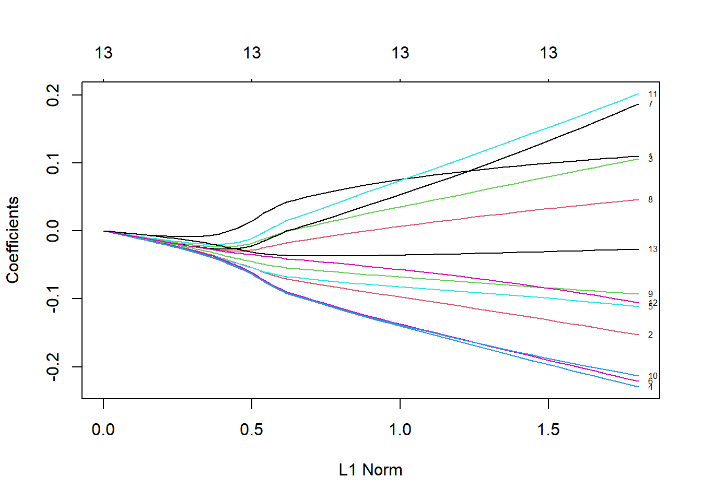
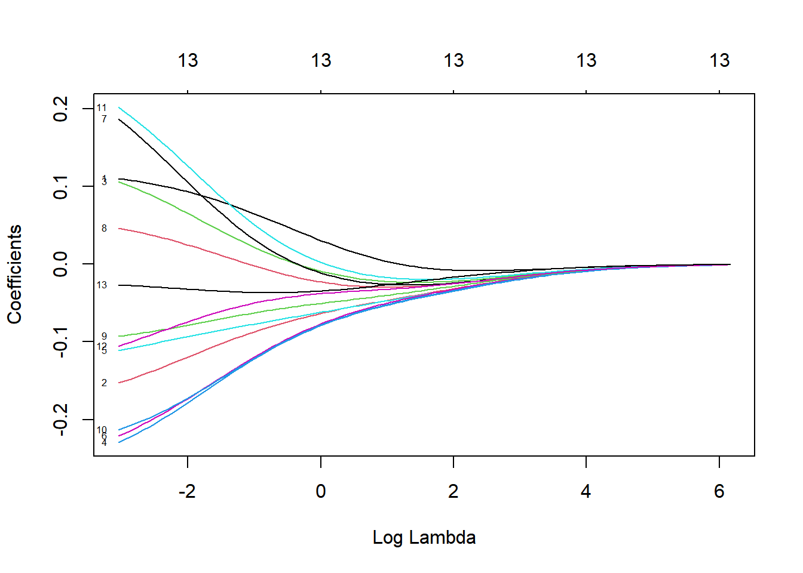
方程各系数
14 x 1 sparse Matrix of class "dgCMatrix"
s1
(Intercept) 1.46961855
AKT1 0.10954607
PKC -0.15147531
PIK3CA 0.10440970
PDE5 -0.22758172
AMPK -0.11010478
eNOS -0.21918436
SIRT1 0.18337012
PDK1 0.04530627
PRKG1 -0.09202807
APLNR -0.21150215
TGR5 0.19878027
EDNRB -0.10397655
CYP1A1 -0.02689341> plot(ridge,xvar="dev",label = T)#解释偏差的程度和回归系数的关系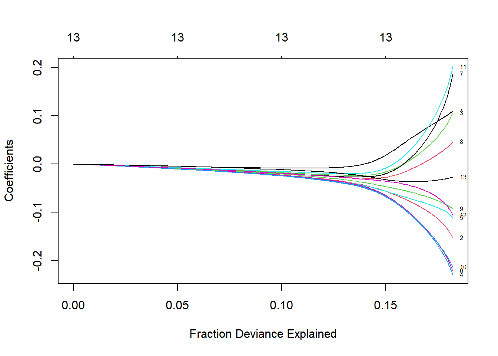
拟合效果评价
> #拟合值
> ridge.y<- predict(ridge,newx=x,s=0.03,type = "response")
> plot(ridge.y,y,xlab="Predicted",ylab = "Actual",main = "Ridge Regression")#预测点在y=x的线上上下波动，表明拟合效果较好。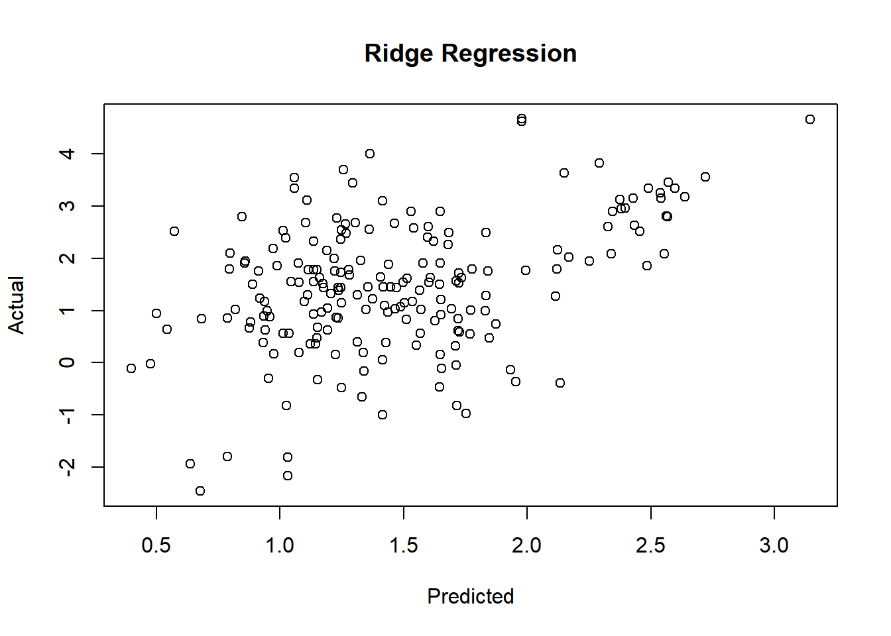
> # 理想情况下，真实值和预测值是相等的（即y=x）岭回归的R2值和均方误差MSE的值
Mean Squared Error (MSE): 1.288113
R Squared (rsq): 0.1820842岭回归可以提升模型的拟合程度R2，一定程度上解决变量之间的共线性问题，但是无法大幅提升模型的拟合程度，说明模型拟合程度不高的根本原因，不仅仅是变量之间的共线性，还有其他的因素，例如变量的方差过大。
均方误差的值，在一定程度上体现了变量的变异程度较大。使得模型的线性关系不稳定。接下来我们将分种类构建，不同种类的蛋白化合物与13个靶点蛋白的结合能对log10ec50的回归预测模型。
黄酮类（Flavonoids）
全部变量线性回归
> library(easystats)
> model <- lm(log10ec50 ~.-ec50,data = Flavonoids)
> summary(model)
Call:
lm(formula = log10ec50 ~ . - ec50, data = Flavonoids)
Residuals:
Min 1Q Median 3Q Max
-0.71490 -0.31584 0.03926 0.21504 0.69502
Coefficients:
Estimate Std. Error t value Pr(>|t|)
(Intercept) 10.6812 3.1996 3.338 0.004492 **
AKT1 -0.1145 0.4619 -0.248 0.807661
PKC 0.4701 0.2156 2.180 0.045600 *
PIK3CA 0.7565 0.3114 2.429 0.028159 *
PDE5 0.7903 0.2988 2.645 0.018384 *
AMPK -2.2291 0.6276 -3.552 0.002898 **
eNOS 0.7679 0.5434 1.413 0.177984
SIRT1 -0.2794 0.3171 -0.881 0.392089
PDK1 1.3519 0.4878 2.772 0.014253 *
PRKG1 0.4012 0.2568 1.563 0.138967
APLNR -2.0091 0.3867 -5.195 0.000109 ***
TGR5 -0.1906 0.3243 -0.588 0.565557
EDNRB -0.7499 0.4098 -1.830 0.087202 .
CYP1A1 -0.2155 0.1513 -1.424 0.174932
---
Signif. codes: 0 '***' 0.001 '**' 0.01 '*' 0.05 '.' 0.1 ' ' 1
Residual standard error: 0.5422 on 15 degrees of freedom
Multiple R-squared: 0.8278, Adjusted R-squared: 0.6785
F-statistic: 5.546 on 13 and 15 DF, p-value: 0.001167> y <- Flavonoids[,15] |>as.matrix()
> x <- Flavonoids[,-c(15,14)] |>
+ as.matrix()> # 预测
> predictions <- predict(model, newdata = Flavonoids)
>
> # 计算MSE
> mse_lm <- mean((predictions - y)^2)
> print(paste("Linear Regression MSE:", mse_lm)) [1] "Linear Regression MSE: 0.152061911817757"> print(paste("Linear Regression AIC:", AIC(model))) [1] "Linear Regression AIC: 57.6778766580835"最优子集法筛选模型
> model_final <- model|>
+ select_parameters()
> summary(model_final)
Call:
lm(formula = log10ec50 ~ PKC + PIK3CA + PDE5 + AMPK + eNOS +
PDK1 + PRKG1 + APLNR + EDNRB + CYP1A1, data = Flavonoids)
Residuals:
Min 1Q Median 3Q Max
-0.87577 -0.30203 0.04005 0.39952 0.68372
Coefficients:
Estimate Std. Error t value Pr(>|t|)
(Intercept) 9.9965 2.6347 3.794 0.001329 **
PKC 0.4268 0.1997 2.137 0.046587 *
PIK3CA 0.6204 0.2586 2.399 0.027488 *
PDE5 0.7417 0.2466 3.008 0.007557 **
AMPK -2.1547 0.5205 -4.140 0.000615 ***
eNOS 0.5935 0.4484 1.324 0.202193
PDK1 1.2893 0.4571 2.820 0.011329 *
PRKG1 0.4015 0.2386 1.682 0.109748
APLNR -1.9399 0.3396 -5.713 2.04e-05 ***
EDNRB -0.9412 0.3250 -2.896 0.009625 **
CYP1A1 -0.2101 0.1001 -2.099 0.050230 .
---
Signif. codes: 0 '***' 0.001 '**' 0.01 '*' 0.05 '.' 0.1 ' ' 1
Residual standard error: 0.5175 on 18 degrees of freedom
Multiple R-squared: 0.8117, Adjusted R-squared: 0.7071
F-statistic: 7.761 on 10 and 18 DF, p-value: 0.0001014> predictions <- predict(model_final, newdata = Flavonoids)
>
> # 计算MSE
> mse_lm <- mean((predictions - y)^2)
> print(paste("最优子集模型 MSE:", mse_lm)) [1] "最优子集模型 MSE: 0.166240947980718"> print(paste("最优子集模型 AIC:", AIC(model_final))) [1] "最优子集模型 AIC: 54.2632405000913"模型诊断
> library(YangPac)
> ModelDiagnose(model_final) [1] "------------------正态性检验--------------------"
OK: residuals appear as normally distributed (p = 0.061).
[1] "-----------异方差性（方差齐性）检验---------------"
OK: Error variance appears to be homoscedastic (p = 0.312).
[1] "----------------自相关性检验--------------------"
OK: Residuals appear to be independent and not autocorrelated (p = 0.530).
[1] "-----------多重共线性性检验---------------"
# Check for Multicollinearity
Low Correlation
Term VIF VIF 95% CI Increased SE Tolerance Tolerance 95% CI
PKC 2.36 [ 1.78, 3.37] 1.54 0.42 [0.30, 0.56]
PIK3CA 4.42 [ 3.15, 6.45] 2.10 0.23 [0.16, 0.32]
PDE5 4.97 [ 3.51, 7.28] 2.23 0.20 [0.14, 0.28]
PRKG1 1.97 [ 1.52, 2.79] 1.40 0.51 [0.36, 0.66]
CYP1A1 4.26 [ 3.04, 6.21] 2.06 0.23 [0.16, 0.33]
Moderate Correlation
Term VIF VIF 95% CI Increased SE Tolerance Tolerance 95% CI
AMPK 8.70 [ 5.99, 12.87] 2.95 0.11 [0.08, 0.17]
APLNR 6.54 [ 4.55, 9.62] 2.56 0.15 [0.10, 0.22]
EDNRB 8.05 [ 5.56, 11.90] 2.84 0.12 [0.08, 0.18]
High Correlation
Term VIF VIF 95% CI Increased SE Tolerance Tolerance 95% CI
eNOS 20.28 [13.71, 30.26] 4.50 0.05 [0.03, 0.07]
PDK1 14.20 [ 9.66, 21.12] 3.77 0.07 [0.05, 0.10]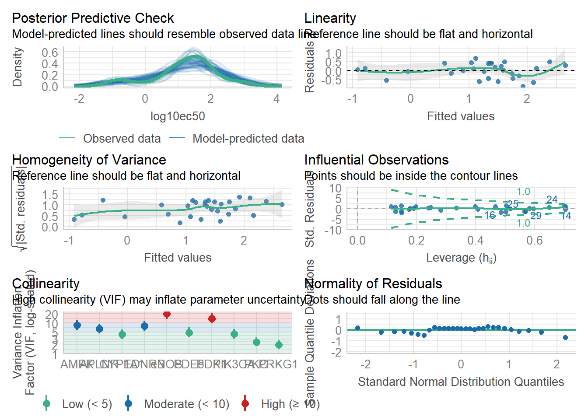
岭回归
方程各系数
14 x 1 sparse Matrix of class "dgCMatrix"
s1
(Intercept) 5.82005794
AKT1 -0.30101576
PKC 0.42549417
PIK3CA 0.62300752
PDE5 0.57819308
AMPK -1.00340963
eNOS 0.13126786
SIRT1 -0.05636896
PDK1 0.57365719
PRKG1 0.20635375
APLNR -1.28264565
TGR5 -0.02791703
EDNRB -0.34596150
CYP1A1 -0.20431364> ridge.y<- predict(ridge,newx=x,s=0.035,type = "response")
> plot(ridge.y,y,xlab="Predicted",ylab = "Actual",main = "Ridge Regression")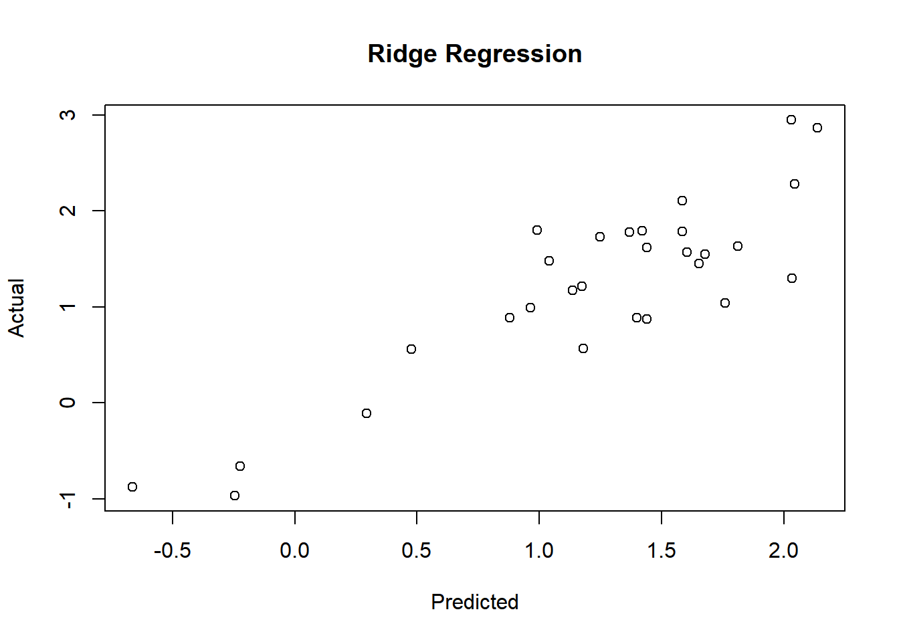
岭回归的R2值和均方误差(MSE)
> R2_mse(Flavonoids,ridge,0.0035) Mean Squared Error (MSE): 0.212761
R Squared (rsq): 0.7590446皂苷类（saponin）
> y <- saponin[,15] |>as.matrix()
> x <- saponin[,-c(15,14)] |>as.matrix()全部指标建模
多元R2值较高，调整后的R2值0.09，差距较大，P值0.5>0.05，方程解释程度较小，说明该种蛋白化合物数据各个自变量之间的共线性影响较为严重。
> model <- lm(log10ec50~.-ec50,data = saponin)
> summary(model)
Call:
lm(formula = log10ec50 ~ . - ec50, data = saponin)
Residuals:
1 2 3 4 5 6 7 8
-0.147787 0.538207 0.725845 0.906822 -0.003582 0.258288 0.844916 -0.028152
9 10 11 12 13 14 15 16
-0.194170 -1.274131 -0.802024 -0.025112 0.304528 -1.572631 0.456686 0.260566
17
-0.248268
Coefficients:
Estimate Std. Error t value Pr(>|t|)
(Intercept) -10.99950 16.12040 -0.682 0.544
AKT1 0.14205 1.10368 0.129 0.906
PKC -2.81219 1.24063 -2.267 0.108
PIK3CA 2.34133 1.52878 1.532 0.223
PDE5 -1.62499 0.92723 -1.753 0.178
AMPK -0.33138 1.56407 -0.212 0.846
eNOS 0.12290 0.86885 0.141 0.896
SIRT1 0.04535 1.53406 0.030 0.978
PDK1 0.49772 1.02797 0.484 0.661
PRKG1 -0.61160 1.51218 -0.404 0.713
APLNR 1.12437 5.41104 0.208 0.849
TGR5 0.33007 1.02006 0.324 0.768
EDNRB 1.67705 3.18247 0.527 0.635
CYP1A1 0.29971 2.26942 0.132 0.903
Residual standard error: 1.597 on 3 degrees of freedom
Multiple R-squared: 0.83, Adjusted R-squared: 0.09307
F-statistic: 1.126 on 13 and 3 DF, p-value: 0.5269> # 预测
> predictions <- predict(model, newdata = saponin)
>
> # 计算MSE
> mse_lm <- mean((predictions - y)^2)
> print(paste("Linear Regression MSE:", mse_lm)) [1] "Linear Regression MSE: 0.450063010837608"> print(paste("Linear Regression AIC:", AIC(model))) [1] "Linear Regression AIC: 64.6716595360358"最优子集筛选
减少共线性较高的预测变量，R2显著提升。
Call:
lm(formula = log10ec50 ~ PKC + PIK3CA + PDE5 + EDNRB + CYP1A1,
data = saponin)
Residuals:
Min 1Q Median 3Q Max
-1.61958 -0.40345 0.03593 0.60166 1.00880
Coefficients:
Estimate Std. Error t value Pr(>|t|)
(Intercept) -2.3507 3.5738 -0.658 0.524219
PKC -2.4697 0.5838 -4.230 0.001412 **
PIK3CA 2.0240 0.6088 3.324 0.006778 **
PDE5 -1.8261 0.4366 -4.182 0.001530 **
EDNRB 1.9591 0.4185 4.681 0.000671 ***
CYP1A1 0.8466 0.6461 1.310 0.216795
---
Signif. codes: 0 '***' 0.001 '**' 0.01 '*' 0.05 '.' 0.1 ' ' 1
Residual standard error: 0.9304 on 11 degrees of freedom
Multiple R-squared: 0.7884, Adjusted R-squared: 0.6922
F-statistic: 8.195 on 5 and 11 DF, p-value: 0.001914> predictions <- predict(model_final, newdata = saponin)
>
> # 计算MSE
> mse_lm <- mean((predictions - y)^2)
> print(paste("最优子集模型 MSE:", mse_lm)) [1] "最优子集模型 MSE: 0.560112328519279"> print(paste("最优子集模型 AIC:", AIC(model_final))) [1] "最优子集模型 AIC: 52.3904053406138"岭回归
绘制岭回归的残差图
> ridge_predictions <- predict(ridge, s = 0.06, newx = x) 岭回归的R2值和均方误差(MSE)
> R2_mse(saponin,ridge,0.06) Mean Squared Error (MSE): 0.5072452
R Squared (rsq): 0.8083448方程各系数
14 x 1 sparse Matrix of class "dgCMatrix"
s1
(Intercept) -5.80016357
AKT1 0.15246982
PKC -2.27542860
PIK3CA 1.80981631
PDE5 -1.45483710
AMPK -0.36769201
eNOS -0.04041883
SIRT1 0.08215439
PDK1 0.30011879
PRKG1 -0.26699522
APLNR 0.77257334
TGR5 0.22078822
EDNRB 1.40263720
CYP1A1 0.40334906生物碱(Alkaloids)
全部变量线性回归
> library(easystats)
> model <- lm(log10ec50 ~.-ec50,data = Alkaloids)
> summary(model)
Call:
lm(formula = log10ec50 ~ . - ec50, data = Alkaloids)
Residuals:
1 2 3 4 5 6 7 8
-0.22870 -0.05617 0.08248 0.00418 0.23730 0.77080 0.16152 -0.03024
9 10 11 12 13 14 15 16
-0.27326 -0.09633 0.91456 -0.71988 0.02231 -0.03806 0.09489 -0.65962
17 18 19
-0.22768 0.12982 -0.08790
Coefficients:
Estimate Std. Error t value Pr(>|t|)
(Intercept) 8.979773 1.768127 5.079 0.00384 **
AKT1 -1.405575 0.541231 -2.597 0.04843 *
PKC -0.493047 0.394269 -1.251 0.26644
PIK3CA 1.710560 0.910508 1.879 0.11908
PDE5 -0.262127 0.509827 -0.514 0.62906
AMPK 5.054500 1.221126 4.139 0.00900 **
eNOS 1.994357 0.825621 2.416 0.06045 .
SIRT1 -1.682406 0.747363 -2.251 0.07417 .
PDK1 -2.437268 0.873204 -2.791 0.03839 *
PRKG1 0.001883 0.441152 0.004 0.99676
APLNR -2.021380 0.560771 -3.605 0.01547 *
TGR5 -3.580033 0.807179 -4.435 0.00679 **
EDNRB 3.054451 0.973256 3.138 0.02571 *
CYP1A1 -0.585859 0.216382 -2.708 0.04240 *
---
Signif. codes: 0 '***' 0.001 '**' 0.01 '*' 0.05 '.' 0.1 ' ' 1
Residual standard error: 0.735 on 5 degrees of freedom
Multiple R-squared: 0.9346, Adjusted R-squared: 0.7646
F-statistic: 5.498 on 13 and 5 DF, p-value: 0.03551> y <- Alkaloids[,15] |>as.matrix()
> x <- Alkaloids[,-c(15,14)] |>
+ as.matrix()> # 预测
> predictions <- predict(model, newdata = Alkaloids)
>
> # 计算MSE
> mse_lm <- mean((predictions - y)^2)
> print(paste("Linear Regression MSE:", mse_lm)) [1] "Linear Regression MSE: 0.142146566757345"> print(paste("Linear Regression AIC:", AIC(model))) [1] "Linear Regression AIC: 46.8526289866258"最优子集法筛选模型
> model_final <- model|>
+ select_parameters()
> summary(model_final)
Call:
lm(formula = log10ec50 ~ AKT1 + PKC + PIK3CA + AMPK + eNOS +
SIRT1 + PDK1 + APLNR + TGR5 + EDNRB + CYP1A1, data = Alkaloids)
Residuals:
Min 1Q Median 3Q Max
-0.71649 -0.18286 -0.02158 0.10397 0.89768
Coefficients:
Estimate Std. Error t value Pr(>|t|)
(Intercept) 9.3125 1.2875 7.233 0.000172 ***
AKT1 -1.4368 0.4664 -3.081 0.017793 *
PKC -0.4251 0.3221 -1.320 0.228400
PIK3CA 1.6697 0.7791 2.143 0.069307 .
AMPK 5.3204 0.9535 5.580 0.000833 ***
eNOS 2.0715 0.6891 3.006 0.019777 *
SIRT1 -1.9127 0.5186 -3.688 0.007773 **
PDK1 -2.7201 0.5867 -4.636 0.002380 **
APLNR -2.1900 0.3618 -6.052 0.000515 ***
TGR5 -3.6477 0.6793 -5.370 0.001041 **
EDNRB 3.2365 0.7558 4.282 0.003646 **
CYP1A1 -0.6385 0.1637 -3.901 0.005890 **
---
Signif. codes: 0 '***' 0.001 '**' 0.01 '*' 0.05 '.' 0.1 ' ' 1
Residual standard error: 0.6374 on 7 degrees of freedom
Multiple R-squared: 0.9312, Adjusted R-squared: 0.823
F-statistic: 8.606 on 11 and 7 DF, p-value: 0.004433> predictions <- predict(model_final, newdata = Alkaloids)
>
> # 计算MSE
> mse_lm <- mean((predictions - y)^2)
> print(paste("最优子集模型 MSE:", mse_lm)) [1] "最优子集模型 MSE: 0.149676023017795"> print(paste("最优子集模型 AIC:", AIC(model_final))) [1] "最优子集模型 AIC: 43.8333030837152"模型诊断
> library(YangPac)
> ModelDiagnose(model_final) [1] "------------------正态性检验--------------------"
OK: residuals appear as normally distributed (p = 0.813).
[1] "-----------异方差性（方差齐性）检验---------------"
OK: Error variance appears to be homoscedastic (p = 0.715).
[1] "----------------自相关性检验--------------------"
OK: Residuals appear to be independent and not autocorrelated (p = 0.658).
[1] "-----------多重共线性性检验---------------"
# Check for Multicollinearity
Low Correlation
Term VIF VIF 95% CI Increased SE Tolerance Tolerance 95% CI
AKT1 4.56 [ 3.63, 5.81] 2.13 0.22 [0.17, 0.28]
CYP1A1 3.64 [ 2.93, 4.61] 1.91 0.27 [0.22, 0.34]
Moderate Correlation
Term VIF VIF 95% CI Increased SE Tolerance Tolerance 95% CI
PKC 7.39 [ 5.81, 9.50] 2.72 0.14 [0.11, 0.17]
High Correlation
Term VIF VIF 95% CI Increased SE Tolerance Tolerance 95% CI
PIK3CA 31.12 [24.03, 40.41] 5.58 0.03 [0.02, 0.04]
AMPK 87.23 [67.11, 113.49] 9.34 0.01 [0.01, 0.01]
eNOS 34.93 [26.95, 45.37] 5.91 0.03 [0.02, 0.04]
SIRT1 29.42 [22.72, 38.19] 5.42 0.03 [0.03, 0.04]
PDK1 32.51 [25.09, 42.21] 5.70 0.03 [0.02, 0.04]
APLNR 10.02 [ 7.82, 12.92] 3.16 0.10 [0.08, 0.13]
TGR5 44.60 [34.37, 57.96] 6.68 0.02 [0.02, 0.03]
EDNRB 36.15 [27.89, 46.96] 6.01 0.03 [0.02, 0.04]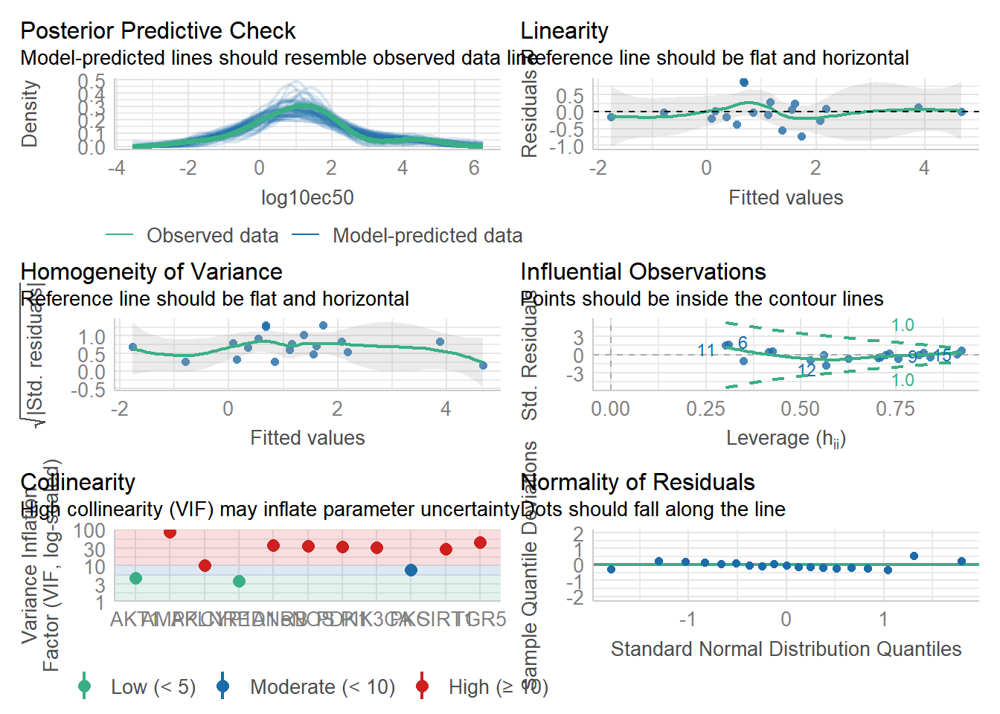
岭回归
方程各系数
14 x 1 sparse Matrix of class "dgCMatrix"
s1
(Intercept) 6.435581710
AKT1 -0.540288095
PKC -0.458524565
PIK3CA 0.669129083
PDE5 -0.536427507
AMPK 0.505480672
eNOS 0.343311284
SIRT1 -0.006730424
PDK1 -0.076345041
PRKG1 0.417289584
APLNR -0.522959611
TGR5 -0.350342785
EDNRB -0.085139571
CYP1A1 -0.082836867> ridge.y<- predict(ridge,newx=x,s=0.09,type = "response")
> plot(ridge.y,y,xlab="Predicted",ylab = "Actual",main = "Ridge Regression")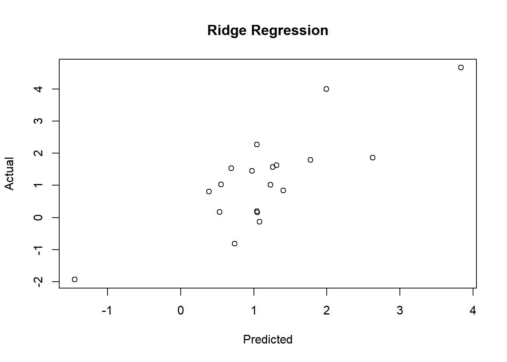
岭回归的R2值和均方误差(MSE)
> R2_mse(saponin,ridge,0.06) Mean Squared Error (MSE): 7.314633
R Squared (rsq): -1.763727酚类(Phenols)
全部变量线性回归
> library(easystats)
> model <- lm(log10ec50 ~.-ec50,data = Phenols)
> summary(model)
Call:
lm(formula = log10ec50 ~ . - ec50, data = Phenols)
Residuals:
Min 1Q Median 3Q Max
-1.55554 -0.33751 0.06419 0.40981 1.44722
Coefficients:
Estimate Std. Error t value Pr(>|t|)
(Intercept) 6.95623 2.74716 2.532 0.0215 *
AKT1 0.19426 0.46694 0.416 0.6826
PKC 0.19205 1.05198 0.183 0.8573
PIK3CA 0.76591 0.37047 2.067 0.0543 .
PDE5 -0.08661 0.93411 -0.093 0.9272
AMPK -1.29362 1.18806 -1.089 0.2914
eNOS -0.41441 0.31157 -1.330 0.2011
SIRT1 0.47075 0.73481 0.641 0.5303
PDK1 0.03435 0.28716 0.120 0.9062
PRKG1 0.63178 0.90657 0.697 0.4953
APLNR 0.57676 0.88004 0.655 0.5210
TGR5 0.18157 0.76449 0.238 0.8151
EDNRB -1.41274 0.50769 -2.783 0.0128 *
CYP1A1 -0.56269 0.33189 -1.695 0.1082
---
Signif. codes: 0 '***' 0.001 '**' 0.01 '*' 0.05 '.' 0.1 ' ' 1
Residual standard error: 0.8919 on 17 degrees of freedom
Multiple R-squared: 0.776, Adjusted R-squared: 0.6048
F-statistic: 4.531 on 13 and 17 DF, p-value: 0.002243> y <- Phenols[,15] |>as.matrix()
> x <- Phenols[,-c(15,14)] |>
+ as.matrix()> # 预测
> predictions <- predict(model, newdata = Phenols)
>
> # 计算MSE
> mse_lm <- mean((predictions - y)^2)
> print(paste("Linear Regression MSE:", mse_lm)) [1] "Linear Regression MSE: 0.436262622034652"> print(paste("Linear Regression AIC:", AIC(model))) [1] "Linear Regression AIC: 92.2593520002365"最优子集法筛选模型
> model_final <- model|>
+ select_parameters()
> summary(model_final)
Call:
lm(formula = log10ec50 ~ PIK3CA + AMPK + eNOS + PRKG1 + EDNRB +
CYP1A1, data = Phenols)
Residuals:
Min 1Q Median 3Q Max
-1.7548 -0.4704 0.1094 0.5838 1.2678
Coefficients:
Estimate Std. Error t value Pr(>|t|)
(Intercept) 7.6888 1.6200 4.746 7.92e-05 ***
PIK3CA 1.0418 0.2509 4.152 0.000359 ***
AMPK -0.5965 0.3646 -1.636 0.114855
eNOS -0.3157 0.1869 -1.689 0.104077
PRKG1 0.7528 0.5022 1.499 0.146878
EDNRB -1.0890 0.3137 -3.472 0.001975 **
CYP1A1 -0.5733 0.1605 -3.573 0.001538 **
---
Signif. codes: 0 '***' 0.001 '**' 0.01 '*' 0.05 '.' 0.1 ' ' 1
Residual standard error: 0.8017 on 24 degrees of freedom
Multiple R-squared: 0.7446, Adjusted R-squared: 0.6807
F-statistic: 11.66 on 6 and 24 DF, p-value: 4.103e-06> predictions <- predict(model_final, newdata = Phenols)
>
> # 计算MSE
> mse_lm <- mean((predictions - y)^2)
> print(paste("最优子集模型 MSE:", mse_lm)) [1] "最优子集模型 MSE: 0.497575759203293"> print(paste("最优子集模型 AIC:", AIC(model_final))) [1] "最优子集模型 AIC: 82.3359579793805"模型诊断
> ModelDiagnose(model_final) [1] "------------------正态性检验--------------------"
OK: residuals appear as normally distributed (p = 0.320).
[1] "-----------异方差性（方差齐性）检验---------------"
OK: Error variance appears to be homoscedastic (p = 0.095).
[1] "----------------自相关性检验--------------------"
OK: Residuals appear to be independent and not autocorrelated (p = 0.576).
[1] "-----------多重共线性性检验---------------"
# Check for Multicollinearity
Low Correlation
Term VIF VIF 95% CI Increased SE Tolerance Tolerance 95% CI
PIK3CA 4.42 [2.93, 7.05] 2.10 0.23 [0.14, 0.34]
eNOS 3.11 [2.14, 4.91] 1.76 0.32 [0.20, 0.47]
CYP1A1 2.59 [1.83, 4.07] 1.61 0.39 [0.25, 0.55]
Moderate Correlation
Term VIF VIF 95% CI Increased SE Tolerance Tolerance 95% CI
AMPK 8.81 [5.59, 14.29] 2.97 0.11 [0.07, 0.18]
PRKG1 6.50 [4.19, 10.47] 2.55 0.15 [0.10, 0.24]
EDNRB 9.05 [5.74, 14.68] 3.01 0.11 [0.07, 0.17]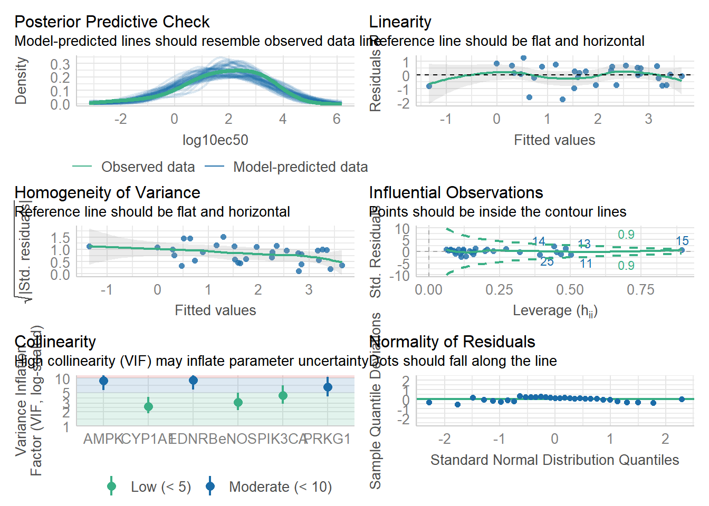
岭回归
方程各系数
14 x 1 sparse Matrix of class "dgCMatrix"
s1
(Intercept) 7.12931973
AKT1 0.26253932
PKC -0.15700302
PIK3CA 0.57004454
PDE5 -0.20227936
AMPK -0.40062493
eNOS -0.10801234
SIRT1 0.14769923
PDK1 -0.03027368
PRKG1 0.01921076
APLNR -0.05202150
TGR5 0.15570623
EDNRB -0.60463582
CYP1A1 -0.30786379> ridge.y<- predict(ridge,newx=x,s=0.08,type = "response")
> plot(ridge.y,y,xlab="Predicted",ylab = "Actual",main = "Ridge Regression")
岭回归的R2值和均方误差(MSE)
> R2_mse(saponin,ridge,0.06) Mean Squared Error (MSE): 2.998338
R Squared (rsq): -0.1328781萜类(Terpenes)
全部变量线性回归
> library(easystats)
> model <- lm(log10ec50 ~.-ec50,data = Terpenes)
> summary(model)
Call:
lm(formula = log10ec50 ~ . - ec50, data = Terpenes)
Residuals:
Min 1Q Median 3Q Max
-1.11342 -0.30168 -0.03678 0.39141 1.23530
Coefficients:
Estimate Std. Error t value Pr(>|t|)
(Intercept) 6.42265 3.15097 2.038 0.072 .
AKT1 0.43593 1.04047 0.419 0.685
PKC 0.37031 0.58965 0.628 0.546
PIK3CA -0.79807 0.74685 -1.069 0.313
PDE5 -0.10249 0.67879 -0.151 0.883
AMPK 0.21174 0.79779 0.265 0.797
eNOS -0.13011 0.67498 -0.193 0.851
SIRT1 -0.16271 0.64037 -0.254 0.805
PDK1 -0.74526 1.03781 -0.718 0.491
PRKG1 0.32773 0.90067 0.364 0.724
APLNR 0.06236 0.58584 0.106 0.918
TGR5 0.42533 0.30342 1.402 0.195
EDNRB -0.65244 0.89666 -0.728 0.485
CYP1A1 0.23733 0.19546 1.214 0.256
---
Signif. codes: 0 '***' 0.001 '**' 0.01 '*' 0.05 '.' 0.1 ' ' 1
Residual standard error: 0.8641 on 9 degrees of freedom
Multiple R-squared: 0.7616, Adjusted R-squared: 0.4172
F-statistic: 2.212 on 13 and 9 DF, p-value: 0.1182> y <- Terpenes[,15] |>as.matrix()
> x <- Terpenes[,-c(15,14)] |>
+ as.matrix()> # 预测
> predictions <- predict(model, newdata = Terpenes)
>
> # 计算MSE
> mse_lm <- mean((predictions - y)^2)
> print(paste("Linear Regression MSE:", mse_lm)) [1] "Linear Regression MSE: 0.292204688288982"> print(paste("Linear Regression AIC:", AIC(model))) [1] "Linear Regression AIC: 66.9742556224229"最优子集法筛选模型
> model_final <- model|>
+ select_parameters()
> summary(model_final)
Call:
lm(formula = log10ec50 ~ PIK3CA + TGR5 + EDNRB + CYP1A1, data = Terpenes)
Residuals:
Min 1Q Median 3Q Max
-1.14232 -0.33739 -0.04902 0.51403 1.17568
Coefficients:
Estimate Std. Error t value Pr(>|t|)
(Intercept) 7.81045 1.27160 6.142 8.43e-06 ***
PIK3CA -0.60720 0.37963 -1.599 0.12713
TGR5 0.56378 0.15831 3.561 0.00223 **
EDNRB -1.05849 0.27446 -3.857 0.00116 **
CYP1A1 0.15564 0.09034 1.723 0.10205
---
Signif. codes: 0 '***' 0.001 '**' 0.01 '*' 0.05 '.' 0.1 ' ' 1
Residual standard error: 0.6769 on 18 degrees of freedom
Multiple R-squared: 0.7074, Adjusted R-squared: 0.6424
F-statistic: 10.88 on 4 and 18 DF, p-value: 0.0001158> predictions <- predict(model_final, newdata = Terpenes)
>
> # 计算MSE
> mse_lm <- mean((predictions - y)^2)
> print(paste("最优子集模型 MSE:", mse_lm)) [1] "最优子集模型 MSE: 0.358619673022883"> print(paste("最优子集模型 AIC:", AIC(model_final))) [1] "最优子集模型 AIC: 53.6848367777012"模型诊断
> library(YangPac)
> ModelDiagnose(model) [1] "------------------正态性检验--------------------"
OK: residuals appear as normally distributed (p = 0.897).
[1] "-----------异方差性（方差齐性）检验---------------"
OK: Error variance appears to be homoscedastic (p = 0.455).
[1] "----------------自相关性检验--------------------"
OK: Residuals appear to be independent and not autocorrelated (p = 0.474).
[1] "-----------多重共线性性检验---------------"
# Check for Multicollinearity
Low Correlation
Term VIF VIF 95% CI Increased SE Tolerance Tolerance 95% CI
CYP1A1 3.28 [ 2.64, 4.16] 1.81 0.30 [0.24, 0.38]
Moderate Correlation
Term VIF VIF 95% CI Increased SE Tolerance Tolerance 95% CI
PKC 8.90 [ 6.94, 11.50] 2.98 0.11 [0.09, 0.14]
TGR5 7.75 [ 6.06, 9.99] 2.78 0.13 [0.10, 0.16]
High Correlation
Term VIF VIF 95% CI Increased SE Tolerance Tolerance 95% CI
AKT1 21.04 [16.23, 27.37] 4.59 0.05 [0.04, 0.06]
PIK3CA 13.36 [10.36, 17.33] 3.66 0.07 [0.06, 0.10]
PDE5 13.23 [10.26, 17.16] 3.64 0.08 [0.06, 0.10]
AMPK 18.91 [14.60, 24.59] 4.35 0.05 [0.04, 0.07]
eNOS 27.75 [21.37, 36.13] 5.27 0.04 [0.03, 0.05]
SIRT1 14.87 [11.51, 19.30] 3.86 0.07 [0.05, 0.09]
PDK1 38.34 [29.47, 49.97] 6.19 0.03 [0.02, 0.03]
PRKG1 23.59 [18.19, 30.70] 4.86 0.04 [0.03, 0.05]
APLNR 10.97 [ 8.52, 14.20] 3.31 0.09 [0.07, 0.12]
EDNRB 26.12 [20.12, 34.00] 5.11 0.04 [0.03, 0.05]
> ModelDiagnose(model_final) [1] "------------------正态性检验--------------------"
OK: residuals appear as normally distributed (p = 0.546).
[1] "-----------异方差性（方差齐性）检验---------------"
OK: Error variance appears to be homoscedastic (p = 0.602).
[1] "----------------自相关性检验--------------------"
OK: Residuals appear to be independent and not autocorrelated (p = 0.934).
[1] "-----------多重共线性性检验---------------"
# Check for Multicollinearity
Low Correlation
Term VIF VIF 95% CI Increased SE Tolerance Tolerance 95% CI
TGR5 3.44 [2.23, 5.84] 1.85 0.29 [0.17, 0.45]
EDNRB 3.99 [2.54, 6.80] 2.00 0.25 [0.15, 0.39]
CYP1A1 1.14 [1.01, 2.86] 1.07 0.88 [0.35, 0.99]
Moderate Correlation
Term VIF VIF 95% CI Increased SE Tolerance Tolerance 95% CI
PIK3CA 5.63 [3.46, 9.69] 2.37 0.18 [0.10, 0.29]
岭回归
方程各系数
14 x 1 sparse Matrix of class "dgCMatrix"
s1
(Intercept) 6.20296901
AKT1 -0.02653323
PKC 0.20890259
PIK3CA -0.35666282
PDE5 -0.26533342
AMPK 0.27227387
eNOS -0.15341890
SIRT1 -0.24715257
PDK1 -0.27831593
PRKG1 0.15715467
APLNR 0.04133084
TGR5 0.32892301
EDNRB -0.46921138
CYP1A1 0.14785399> ridge.y<- predict(ridge,newx=x,s=0.08,type = "response")
> plot(ridge.y,y,xlab="Predicted",ylab = "Actual",main = "Ridge Regression")
岭回归的R2值和均方误差(MSE)
> R2_mse(saponin,ridge,0.06) Mean Squared Error (MSE): 6.537455
R Squared (rsq): -1.470082苯丙素类(PPP)
全部变量线性回归
> library(easystats)
> model <- lm(log10ec50 ~.-ec50,data = PPP)
> summary(model)
Call:
lm(formula = log10ec50 ~ . - ec50, data = PPP)
Residuals:
1 2 3 4 5 6 7 8
0.09947 -0.01529 -0.04740 0.10067 -0.15370 0.25298 0.05560 -0.11079
9 10 11 12 13 14 15 16
0.17997 -0.08865 0.02891 -0.04551 -0.01297 0.32123 -0.37153 -0.19300
Coefficients:
Estimate Std. Error t value Pr(>|t|)
(Intercept) 8.62118 3.87907 2.222 0.156
AKT1 -0.11377 0.82150 -0.138 0.903
PKC 1.67834 0.87016 1.929 0.194
PIK3CA 0.78843 0.34309 2.298 0.148
PDE5 1.37764 2.09019 0.659 0.578
AMPK -1.10888 1.14738 -0.966 0.436
eNOS -1.25976 1.14771 -1.098 0.387
SIRT1 0.78556 1.24443 0.631 0.592
PDK1 -0.54365 0.87779 -0.619 0.599
PRKG1 -0.67026 0.55429 -1.209 0.350
APLNR -1.61286 1.53617 -1.050 0.404
TGR5 -0.07792 0.68401 -0.114 0.920
EDNRB -0.12536 0.96921 -0.129 0.909
CYP1A1 -0.34871 0.37482 -0.930 0.450
Residual standard error: 0.4729 on 2 degrees of freedom
Multiple R-squared: 0.9764, Adjusted R-squared: 0.823
F-statistic: 6.364 on 13 and 2 DF, p-value: 0.1438> y <- PPP[,15] |>as.matrix()
> x <- PPP[,-c(15,14)] |>
+ as.matrix()> # 预测
> predictions <- predict(model, newdata = PPP)
>
> # 计算MSE
> mse_lm <- mean((predictions - y)^2)
> print(paste("Linear Regression MSE:", mse_lm)) [1] "Linear Regression MSE: 0.0279559949980445"> print(paste("Linear Regression AIC:", AIC(model))) [1] "Linear Regression AIC: 18.1720552659144"最优子集法筛选模型
> model_final <- model|>
+ select_parameters()
> summary(model_final)
Call:
lm(formula = log10ec50 ~ PKC + PIK3CA + PDE5 + AMPK + eNOS +
SIRT1 + PDK1 + PRKG1 + APLNR + CYP1A1, data = PPP)
Residuals:
1 2 3 4 5 6 7 8
0.13619 -0.06556 -0.03404 0.12401 -0.20851 0.28587 0.07262 -0.12616
9 10 11 12 13 14 15 16
0.20872 -0.08635 0.05405 -0.04728 -0.05811 0.25824 -0.36115 -0.15256
Coefficients:
Estimate Std. Error t value Pr(>|t|)
(Intercept) 8.3875 0.9888 8.483 0.000374 ***
PKC 1.6333 0.3221 5.071 0.003862 **
PIK3CA 0.7545 0.1684 4.481 0.006512 **
PDE5 1.1619 0.4240 2.740 0.040794 *
AMPK -1.1067 0.3483 -3.178 0.024605 *
eNOS -1.1325 0.4150 -2.729 0.041347 *
SIRT1 0.8679 0.4094 2.120 0.087485 .
PDK1 -0.6640 0.3459 -1.920 0.112934
PRKG1 -0.7592 0.2690 -2.823 0.036986 *
APLNR -1.5906 0.3948 -4.029 0.010031 *
CYP1A1 -0.3229 0.1148 -2.813 0.037398 *
---
Signif. codes: 0 '***' 0.001 '**' 0.01 '*' 0.05 '.' 0.1 ' ' 1
Residual standard error: 0.3052 on 5 degrees of freedom
Multiple R-squared: 0.9754, Adjusted R-squared: 0.9263
F-statistic: 19.84 on 10 and 5 DF, p-value: 0.00207> predictions <- predict(model_final, newdata = PPP)
>
> # 计算MSE
> mse_lm <- mean((predictions - y)^2)
> print(paste("最优子集模型 MSE:", mse_lm)) [1] "最优子集模型 MSE: 0.0291077727762431"> print(paste("最优子集模型 AIC:", AIC(model_final))) [1] "最优子集模型 AIC: 12.818032506418"模型诊断
> ModelDiagnose(model_final) [1] "------------------正态性检验--------------------"
OK: residuals appear as normally distributed (p = 0.629).
[1] "-----------异方差性（方差齐性）检验---------------"
OK: Error variance appears to be homoscedastic (p = 0.497).
[1] "----------------自相关性检验--------------------"
OK: Residuals appear to be independent and not autocorrelated (p = 0.128).
[1] "-----------多重共线性性检验---------------"
# Check for Multicollinearity
Low Correlation
Term VIF VIF 95% CI Increased SE Tolerance Tolerance 95% CI
PIK3CA 4.11 [ 3.40, 5.04] 2.03 0.24 [0.20, 0.29]
CYP1A1 4.64 [ 3.82, 5.71] 2.15 0.22 [0.18, 0.26]
Moderate Correlation
Term VIF VIF 95% CI Increased SE Tolerance Tolerance 95% CI
PRKG1 7.27 [ 5.92, 9.00] 2.70 0.14 [0.11, 0.17]
High Correlation
Term VIF VIF 95% CI Increased SE Tolerance Tolerance 95% CI
PKC 16.01 [12.90, 19.95] 4.00 0.06 [0.05, 0.08]
PDE5 43.44 [34.79, 54.31] 6.59 0.02 [0.02, 0.03]
AMPK 15.02 [12.10, 18.70] 3.88 0.07 [0.05, 0.08]
eNOS 26.80 [21.51, 33.46] 5.18 0.04 [0.03, 0.05]
SIRT1 27.60 [22.14, 34.46] 5.25 0.04 [0.03, 0.05]
PDK1 24.50 [19.67, 30.58] 4.95 0.04 [0.03, 0.05]
APLNR 16.74 [13.47, 20.85] 4.09 0.06 [0.05, 0.07]
岭回归
方程各系数
14 x 1 sparse Matrix of class "dgCMatrix"
s1
(Intercept) 6.479651909
AKT1 0.197872284
PKC 0.786253229
PIK3CA 0.655306427
PDE5 -0.007733551
AMPK -0.495885362
eNOS -0.386107774
SIRT1 0.649148347
PDK1 -0.215970674
PRKG1 -0.936822245
APLNR -0.281275576
TGR5 -0.163466739
EDNRB -0.226227772
CYP1A1 -0.332733627> ridge.y<- predict(ridge,newx=x,s=0.06,type = "response")
> plot(ridge.y,y,xlab="Predicted",ylab = "Actual",main = "Ridge Regression")
岭回归的R2值和均方误差(MSE)
> R2_mse(saponin,ridge,0.06) Mean Squared Error (MSE): 3.929984
R Squared (rsq): -0.4848868预测新值
收集新的皂苷类数据，预测log10ec50值，最后s1列为岭回归的预测结果。
> library(readxl)
> saponin_predict <- read_excel("D:\\Rstudio\\Rmyfile\\Traditional Chinese Medicine\\saponin_predict.xlsx")> saponin_predict <- as.matrix(saponin_predict)
> ridge.predict <-predict(ridge,s=0.06,newx = saponin_predict,type = "response")> saponin_predict <- cbind(saponin_predict,ridge.predict)
> saponin_predict <- as.data.frame(saponin_predict)
> saponin_predict AKT1 PKC PIK3CA PDE5 AMPK eNOS SIRT1 PDK1 PRKG1 APLNR TGR5
1 6.424 6.614 7.097 7.281 6.842 8.382 9.071 9.389 6.621 8.378 9.819
2 6.011 7.090 8.292 7.698 7.315 8.657 8.577 8.510 5.853 7.970 10.230
3 6.813 8.053 7.801 7.934 8.173 8.941 9.495 7.825 7.023 8.769 11.610
4 7.175 8.321 8.779 9.425 7.740 8.979 10.100 9.953 6.538 8.339 8.475
5 8.062 8.287 8.182 10.020 8.877 9.484 9.528 8.675 8.009 9.847 11.060
6 6.363 7.806 8.643 9.697 8.199 7.697 10.110 9.069 6.513 8.612 9.989
7 8.419 8.704 9.008 9.603 8.724 7.956 10.050 9.180 8.361 9.794 10.390
8 6.837 8.150 7.390 8.777 7.014 9.031 8.712 7.067 5.963 9.107 8.775
9 5.322 7.661 7.627 9.415 8.457 8.093 9.913 9.835 7.579 9.096 10.160
10 7.391 8.654 8.530 8.080 8.128 8.726 9.201 9.353 6.922 8.635 10.310
11 6.429 7.272 7.288 8.382 6.967 8.820 9.097 8.178 5.906 8.310 9.676
12 6.420 7.681 8.412 8.463 6.865 9.279 8.753 8.145 6.811 8.598 8.885
13 6.103 8.687 8.424 9.338 8.135 9.017 9.977 10.730 8.271 8.678 11.110
14 7.812 8.811 9.576 10.170 9.178 9.002 10.890 9.652 8.274 9.485 10.280
15 8.024 8.715 8.903 9.477 9.497 10.440 10.030 9.711 7.947 9.155 9.148
16 6.943 8.340 7.953 8.822 7.949 8.780 9.947 7.764 6.622 9.856 9.381
17 6.250 7.023 7.579 8.566 7.372 8.551 8.340 6.940 5.682 8.106 7.997
EDNRB CYP1A1 s1
1 8.453 6.803 0.4367400
2 8.055 5.919 2.1887974
3 8.543 6.179 1.2464909
4 8.886 6.966 3.0397089
5 9.927 6.698 -0.4325599
6 8.326 7.283 2.5680341
7 10.140 7.340 0.9389569
8 9.555 6.411 2.3023121
9 9.823 6.619 -0.2701916
10 8.520 6.631 2.0940882
11 8.286 5.889 2.1732793
12 9.259 6.441 1.6828730
13 8.926 6.702 0.3543886
14 9.932 7.559 1.2457382
15 8.979 7.320 0.3714492
16 10.540 6.344 1.9980477
17 8.310 5.603 2.4417716